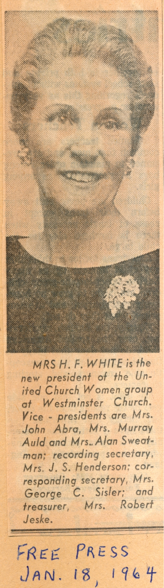
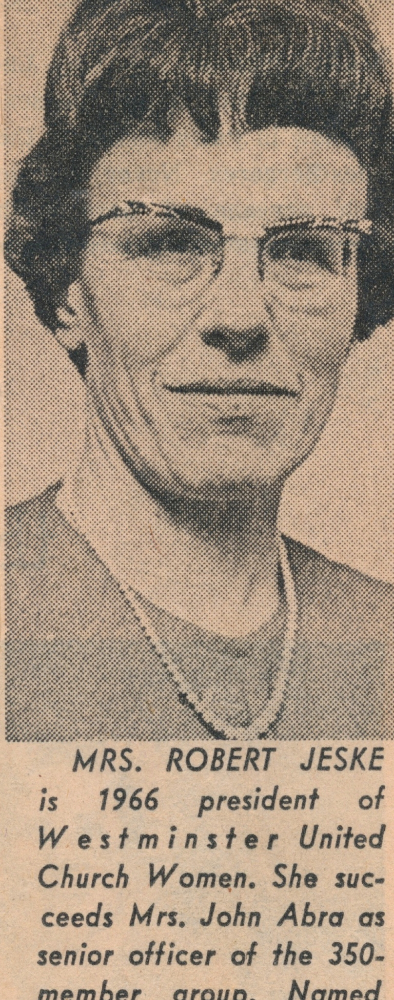
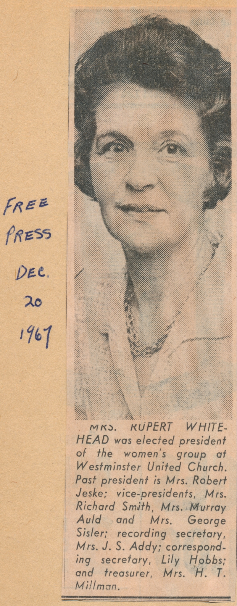

Stories of Westminster United Church & its People / Page
190
A copy of Bert Macfarlane’s Westminster Letter of March, 1962, filled in further details:
Finance was in the hands of Mrs. J.E. Yarnell, Mrs. Alan Sweatman handled
Christian
Citizenship and Social Action. Mrs. Harold Bennett was in charge of Community
Friendship
and Visiting; Mrs. D.W. Evans carried the overly long title Cooperation in
Christian Education
and Missionary Education; Mrs. J.K.A. Brown looked after flowers; Mrs. Roland
Rivalin Literature
and Communications; the Manse was the responsibility of Mrs. Aiden Conklin;
Membership Mrs.
F. D. Hamilton and Mrs. H. R. Sutherland; Press and Publicity Mrs. Rupert
Whitehead; Program
Mrs. Donald McInnes; Social Functions Mrs. Wm. Ferguson and Mrs. Rolph Huband;
Stewardship
and Recruiting Mrs. Richard Smith; Supply and Social Assistance Mrs. Stanley
Russell
and Mrs. R.D. Jackson.
R.D.’s (Bert’s) Newsletter said: Excitement, enthusiasm and anticipation seemed to be the
keynote
at the Inaugural Meeting on January 9th. Mrs. J.L. Carpenter set the tone with
her Devotional ‘And
Jesus said I am the Light of the World.’
Mr. Mercer presided until the election
of officers …
A veritable who’s who of women,
leaders in the congregation in their
time. But we have to notice that of
these women are named after their
husbands not by their own names.
Even in the face of a new paradigm
for women old practices persisted.
Post Script: Not Pleasant.
Women and Westminster United Church




Lef to right: Mrs. H.F. White (President, 1964); Mrs. John Abra (1965);
Mrs. Robert Jeske (1966); and Mrs. Rupert Whitehead (1967-68).
(Double-click for full clippings.)
.